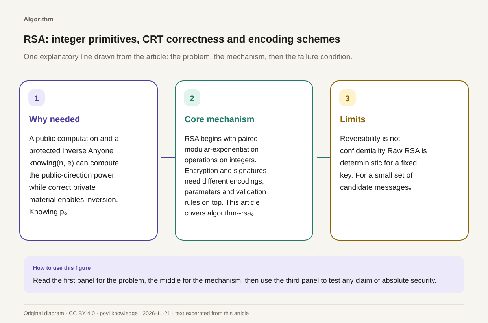
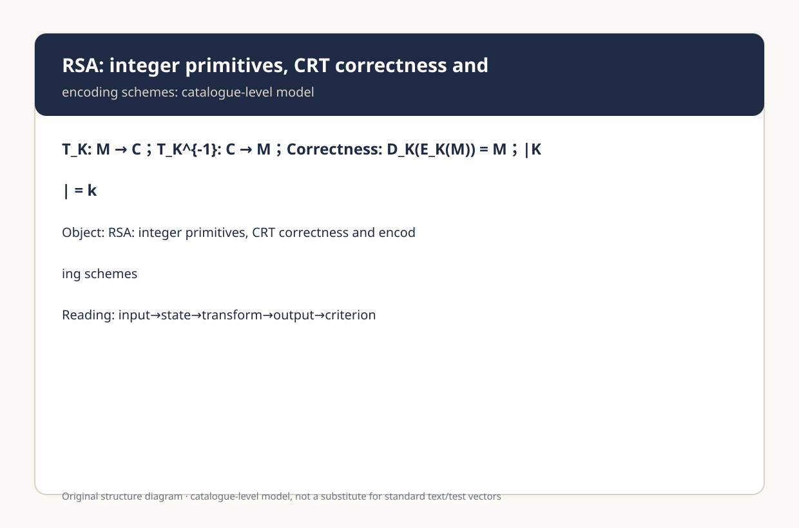

Principles
Algorithm: RSA (RSA 公钥密码). RSA begins with paired modular-exponentiation operations on integers. Encryption and signatures need different encodings, parameters and validation rules on top. This article covers algorithm--rsa, restricted to two-prime RSA, then explains its use by OAEP and PSS. It does not complete the RFC 8017 catalog entry or provide a deployable cryptographic service. ### Octet strings and integer representatives
Let modBits be n's bit length and k=ceil(modBits/8) its octet length. RSAEP accepts m and returns c in 0…n−1; RSADP inverts ciphertext representatives in that range. Zero and representatives sharing a factor with n are not excluded. An out-of-range value is an error: silently reducing it would alias distinct supplied inputs. The user message M is an octet string. OS2IP interprets it as a nonnegative big-endian integer. I2OSP(x, len) returns exactly len big-endian octets, including leading zeroes, and fails if x≥256^len. These are representation conversions, not confidentiality, padding or authentication. Both 00 41 and 41 represent 65, so a separate length convention matters. RSAES ciphertexts and RSASSA signatures use k octets; internal encoded-message lengths depend on the scheme. ### Conditions on a two-prime key
Take distinct odd primes p, q, set n=pq, φ(n)=(p−1)(q−1) and λ(n)=lcm(p−1, q−1). RFC 8017 requires 3≤e<n and gcd(e,λ(n))=1; its own wording is integer between 3 and n - 1 satisfying GCD(e,\lambda(n)) = 1 (retained text rfc8017.txt:457-458), with private exponent 0<d<n satisfying ed≡1 modulo λ(n). This inverse is modular, not the fraction 1/e. Inversion modulo φ(n) also supplies a correct exponent because λ(n) divides φ(n), but the moduli should not be conflated. These arithmetic and representation conditions are not a complete secure key-generation procedure. Distinctness, primality and exponent coprimality need checking; real generation also involves randomness, prime testing, parameter constraints and key lifecycle. Neither historical size suggestions nor successful round trips establish secure deployment parameters. ### Correctness includes non-coprime representatives
Write ed=1+t λ(n). For r=p or q, split the argument. If r divides m, both m^ed and m are zero modulo r. Otherwise Fermat's theorem gives m^(r−1)≡1; since r−1 divides λ(n), m^ed≡m modulo r. Coprimality of p, q lets CRT give a unique corresponding integer in 0…n−1, hence (m^e)^d modn=m. This never assumes every message is invertible. Applying Euler's theorem indiscriminately would miss multiples of a prime factor. The program exhausts all 3233 representatives, including 113 non-coprime ones counting zero. This checks the finite example, not the general theorem. ### Direct exponentiation and CRT
Repeated squaring evaluates modular powers while reducing intermediate values, without constructing the full unreduced power. A private representation can store dP=d mod(p−1), dQ=d mod(q−1), qInv=q^(−1) modp. Compute m1=c^dP modp, m2=c^dQ modq, then h=((m1−m2)qInv) modp and m=m2+qh. With h in 0…p−1, m is in 0…pq−1 and has the required residues. Here qInv is q's inverse modulo p; another CRT convention must be transformed before these equations are used. Smaller moduli can accelerate operations, but no fixed fourfold speedup is universally guaranteed.

Why it matters
Anyone knowing(n, e) can compute the public-direction power, while correct private material enables inversion. Knowing p, q yields λ(n) and an appropriate d, so the factors must remain secret. This implication does not prove that every RSA inversion algorithm is equivalent to factoring. The latter must not be presented as a general established theorem.
An integer permutation, encryption scheme, signature scheme, certificate and protocol solve different problems. OAEP encodes before encryption; PSS builds a checkable signature representative. Binding an identity to a key needs authentication and protocol context. Raw RSA correctness therefore yields neither modern confidentiality nor an unforgeability guarantee.
Applications
In RFC 8017's convention choose Hash with hLen-octet output, an MGF and label L. Require mLen≤k−2hLen−2. Form lHash=Hash(L) and DB=lHash || PS ||01|| M, with zero padding PS. Generate an hLen-octet random seed; mask DB using MGF(seed, k−hLen−1), then seed using MGF(maskedDB, hLen). Set EM=00||maskedSeed||maskedDB, convert it to m, compute c=m^e modn, and output C=I2OSP(c, k).
MGF1 hashes its input followed by four-octet big-endian counters 0,1,…, concatenates outputs and truncates. It is deterministic, not an RNG; the OAEP seed supplies randomness. L is a separately agreed, hash-checked parameter rather than extra message content. The ciphertext has k octets but the message loses capacity to encoding overhead; arbitrary files are not single RSA messages.
PSS is a signature scheme: it is not OAEP, and it is not plaintext being encrypted with the private key. Set emBits=modBits−1 and emLen=ceil(emBits/8). Hash M to mHash, use an sLen-octet salt and compute H=Hash(eight zero octets||mHash||salt). Form DB=PS||01||salt, mask with MGF(H, emLen−hLen−1), clear the excess high bits, and set EM=maskedDB||H||bc. Require emLen≥hLen+sLen+2. The private primitive maps OS2IP(EM) to s, serialized as k-octet S.
Verification needs M as well as S. The public power recovers an encoded representative, not the original message from the signature. Signature length/range, trailer, high bits, padding, delimiter, salt length and recomputed H all matter. Merely checking a trailing digest or ignoring parameters is not PSS verification. Original PSS security arguments assume RSA inversion hardness and idealized hashes; standardized encoding differs from the original. A proof name is no unconditional guarantee for arbitrary implementations.
TLS 1.3's specification checked on 2026-10-24, RFC 9846, excludes static RSA key transport while retaining RSA-PSS authentication. The corresponding PSS schemes constrain the digest, MGF1 digest and salt length. Thus no RSA key exchange does not mean no RSA. Certificate paths, host identity, negotiated parameters and handshake context need their own protocol checks; a valid RSA signature alone does not bind a name to a key.

Limits & attacks
Raw RSA is deterministic for a fixed key. For a small set of candidate messages, anyone can encrypt each publicly and compare. Also E(m1)E(m2) modn=E(m1m2 modn). The example changes a ciphertext of 65 into one of 130 without the private key. This is malleability, not a general free-decryption algorithm. With OAEP, the equation cannot simply be interpreted as multiplication of user messages.
Repeated or invalid prime factors, invalid exponent conditions, key exposure, poor randomness and incorrect encoding checks can break a system. A small public exponent applied directly to a small unprocessed message can expose an ordinary integer power before modular wraparound. No exponent name alone is a security switch; hard factoring cannot repair scheme or implementation mistakes.
OAEP decoding checks length, range, leading octet, label hash and DB structure. Distinguishable responses or timing for different failures can provide chosen-ciphertext information. PKCS #1 v1.5 encryption and PSS signatures are different schemes despite their common PKCS #1 label. Shoup distinguishes general trapdoor-permutation OAEP from RSA-OAEP's special algebraic case: a gap in an early general proof is not proof of RSA-OAEP insecurity.
Kocher's timing research shows secret-related leakage from some private-operation implementations. A variable-time teaching BigInt loop is not private-key implementation code. Blinding and secret-independent execution paths need dedicated design; neither implies that all physical leakage disappears.
CRT also adds a fault boundary. An output correct modulo one prime and wrong modulo the other can reveal a factor through a public algebraic relation. Boneh, DeMillo and Lipton studied this for certain CRT-RSA implementations. Output checking and fault resistance are implementation duties; a normal-operation correctness proof does not secure incorrect calculations. This batch processes only public toy numbers and public fixtures, without key-custody, constant-time or fault-resistant service claims.
History
Rivest, Shamir and Adleman's original paper, A Method for Obtaining Digital Signatures and Public-Key Cryptosystems, appeared in Communications of the ACM in 1978. It presents modular exponentiation, key relations and a signature proposal. Its discussion of forgery, parameters and computing resources belongs to its research era and cannot simply become present-day guarantees. OAEP, PSS and later protocol encodings require separate specifications.
Bellare and Rogaway's 1996 PSS paper studies exact signature security. Shoup's revised 2001 analysis illustrates the importance of a proof's assumptions and construction. RFC 8017 republished PKCS #1 v2.2 in 2016 and obsoleted RFC 3447. It is Informational; an RFC label does not automatically mean Internet Standard.
This review rechecked TLS status: RFC 9846 appeared in July 2026 and explicitly obsoletes RFC 8446. It is used here for RSA's TLS 1.3 role, with the checking date retained. Protocol-document status, algorithm validity and availability in a particular product remain separate matters.
Worked example & verification
Worked example
Take one published or standard test vector, record the input, the ordered steps and the byte-exact output, then compare with an independent implementation. Where no citable numeric vector is available, the entry records only structural steps and does not invent an output.
References
- Wikipedia search entry for RSA 公钥密码. https://zh.wikipedia.org/w/index.php?search=RSA%20%E5%85%AC%E9%92%A5%E5%AF%86%E7%A0%81
- Handbook of Applied Cryptography (Menezes, van Oorschot, Vanstone). https://www.cacr.math.uwaterloo.ca/hac/